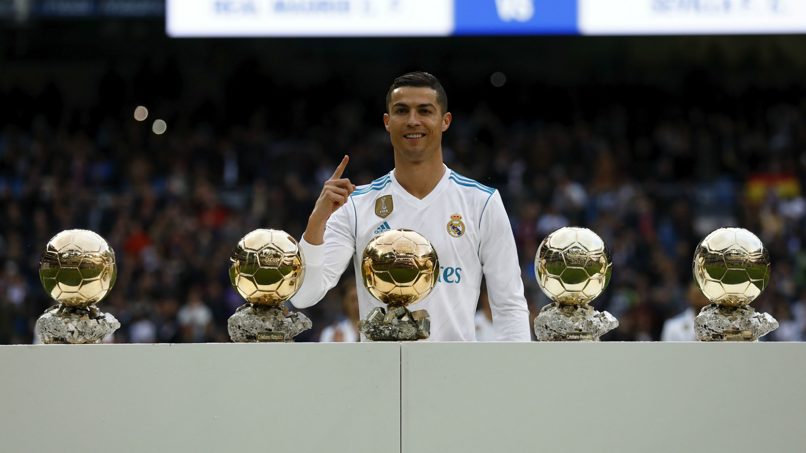

Cristiano Ronaldo Posing With Ballon D'Or Awards At Santiago Bernabeu
Important Events From His Life:
5 feb 1985 -Cristiano Ronaldo was born in Santo Antonio, a neighbourhood of Funchal, Madeira, the youngest child of Maria Dolores dos Santos Aveiro, a cook, and Jose Dinis Aveiro, a municipal gardener. He was named after Ronald Reagan, who was his father's favorite actor
1 Jul 1993 - At the age of eight, Ronaldo played for amateur team Andorinha, where his father worked as the kit man. His father was the main one that influenced Ronaldo to start playing the sport of soccer. Even at such young age, he began to show his massive talents on soccer and several scouters from the other European teams get to notice him.
1 Jun 1995 - Ronaldo signed with local club Nacional. The coach in the Nacional recognized Ronaldo's great talent and decides to teach him in order to let him become a great player in the future. Here, he learns the style of training from the coach, which is stopless and very hardcore. Experiencing the hard training at the young age let him to easily have the habit of continuously training himself for the improved skills.
1 Jun 1997 - After playing well for Nacional, he went on a three-days trial with Sporting CP, who subsequently signed him. The scouter of the Sporting recommended the youth coach to sign Ronaldo, who seemed to have best talent on soccer that he have never seen before in his life. He played for the youth teams from 1997 - 2001. He became the only player ever to play for Sporting's U-16, U-17, U-18, B-team, and first team, all within one season.
1 Sep 2001 - After playing well for the youth teams, Cristiano made the step up to the senior team. This was when he was only 16 years old, which is about the age of high scholars. He wrote in his autobiography that his first debut was very nervous for him as well as many other players and it was his first time to experience the pressure in the stadium as the professional player. Between 2001 - 2003 he makes 25 appearances and scores 3 goals.
18 Jul 2003 - In the May of 2003, Sporting Lisbon and Manchester United decide to have a friendly match against each other. Ronaldo was selected to be on the starting line up against the United. After Sporting beat United 3-1 in a pre-season friendly, United's players including Patrice Evra and Rio Ferdinand urged Sir Alex Ferguson to sign Ronaldo. Not only the players but the Ferguson was also impressed at Ronaldo's great tanet on dribbling and powerful shots. Eventually, he joined United for £12.24 million.
6 February 2007 - Cristiano Ronaldo captained Portugal National Football team for the first time in a friendly against Brazil.
28 May 2008 - Ronaldo scores a header and is voted man of the match as United beat Chelsea in Moscow to win the Champions League. This was considered to be his best season at United. He scored 42 goals and won the Golden Boot award for the top goalscorer in Europe. He also won the Ballon d'Or award, becoming the first United player since George Best in 1968 to do so. As a result, Ronaldo started to be recognized as one of the best players in the world.
6 Jul 2009 - At this time, Ronaldo thought that he has done everything in the United and it's time for him to move to another team for new challenges. Coincidentally, Manchester United evnetually accepted an unconditional offer of £80 million from Real Madrid for Ronaldo. He was presented to the world media as a Real Madrid player on 6 July. He was welcomed by 80,000 fans at his presentation at the Santiago Bernabeu Stadium, which is the home stadium of Real Madrid.
21 Jun 2011 -Ronaldo continued his stunning plays in the field as part of Real Madrid. As a result, Ronaldo receives the La Liga Golden Shoe award, which is given to the player who scored the most during the season in La Liga. He later donates this Golden Boots in aid of children in Gaza, Palestine.
13 January 2014 - Cristiano Ronaldo won his second Ballon d'Or, after winning the award in 2008, as well as his first FIFA Ballon d'Or.
5 March 2014 - Ronaldo subsequently scored twice in a 5-1 friendly win over Cameroon on 5 March 2014 to become his country's all-time top scorer.
12 January 2015 - Cristiano Ronaldo won the FIFA Ballon d'Or as the World Player of the Year for a second consecutive time, having won it previously last year.This was his third Ballon d'Or win overall, placing him second to only Lionel Messi for the most wins in the history of the award.
30 September 2015 - Cristiano Ronaldo became Real Madrid's all-time record goalscorer on this day, September 30, 2015, breaking former captain Raul's record.
5 March 2016 - By scoring four goals in a 7-1 home win over Celta de Vigo on 5 March 2016, Ronaldo arrived at 252 goals in La Liga to become the competition's second-highest scorer in history behind Messi.
12 December 2016 - Cristiano Ronaldo won the Ballon d'Or award by a record margin of 429 points ahead of second placed Lionel Messi and Antoine Griezmann, who came third.Ronaldo scored 745 points out of a maximum possible of 865. It was his fourth Ballon d'Or, the most of any European player in the history of the award.
12 April 2017 -On 12 April, in the 2016-17 UEFA Champions League quarter-final against Bayern Munich, Ronaldo scored two goals in a 2-1 away win to give Madrid the win and the lead going into the second leg. The two goals saw him make history in becoming the first player to reach 100 goals in UEFA club competition.
7 December 2017 - Cristiano Ronaldo won the Ballon d'Or for the fifth time on 7 December 2017, equalling the highest tally of Ballons d'Or in history at the time, sharing the record with Lionel Messi.
10 July 2018 - After eight days of transfer speculation concerning Italian club Juventus, on 10 July 2018, Ronaldo signed a four-year contract with them after completing a €100 million transfer, which included an additional €12 million in other fees and solidarity contributions to Ronaldo's youth clubs. The transfer was the highest ever for a player over 30 years old, and the highest ever paid by an Italian club.